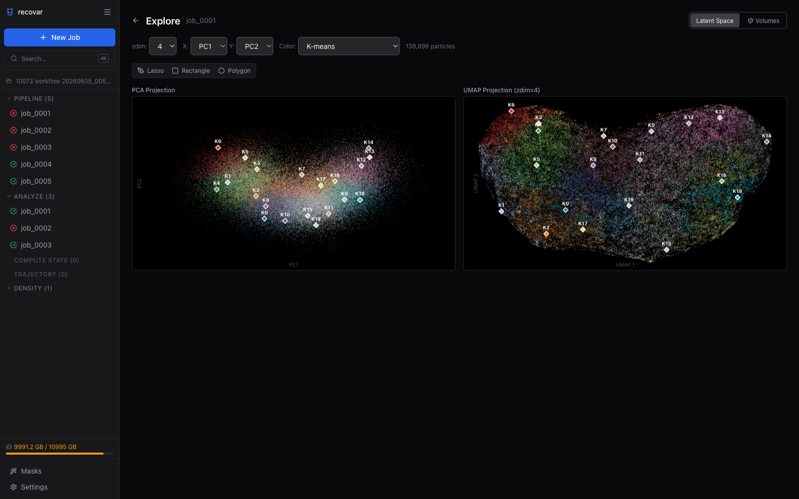

Extracting Image Subsets¶
RECOVAR can identify which images contributed to a particular feature in a generated volume. This is useful for:
- Focused refinement of a specific conformational state
- Re-importing selected particles into RELION or cryoSPARC
- Understanding which particles contribute to observed features
Worked example
The Tutorial demonstrates subset extraction on EMPIAR-10076, where an outlier cluster is identified and excluded before re-running the pipeline on the cleaned subset.
Based on volume features¶
The extract_image_subset command identifies images that produced a particular region of a volume.
recovar extract_image_subset \
output/analysis_10/kmeans \
--output subset_indices.pkl \
--mask feature_mask.mrc
Specifying the region of interest¶
Choose one of:
| Method | Flag | Description |
|---|---|---|
| Mask file | --mask mask.mrc |
Center of mass of mask defines the region |
| Coordinates | --coordinate 50,50,50 |
Pixel coordinates of the feature |
| Subvolume index | --subvol-idx 3 |
Direct subvolume index |
Note
The mask's center of mass is used to identify the region. Non-convex masks may give unexpected results — use a simple spherical or box mask around the feature of interest.
Input directory¶
The first positional argument should be a volume directory generated by analyze, compute_state, or compute_trajectory. For example:
Based on k-means clusters¶
Extract particles belonging to specific k-means clusters:
# Keep particles in clusters 0 and 3
recovar extract_image_subset_from_kmeans \
output/analysis_10/data/kmeans_result.pkl \
subset_indices \
0,3
# Keep everything EXCEPT clusters 0 and 3
recovar extract_image_subset_from_kmeans \
output/analysis_10/data/kmeans_result.pkl \
subset_indices \
0,3 -i
The output is written to subset_indices/indices.pkl.
Arguments¶
| Argument | Description |
|---|---|
path_to_centers |
Path to kmeans_result.pkl from analyze (in data/) |
output_path |
Output directory (indices saved as indices.pkl inside) |
kmeans_indices |
Comma-separated cluster indices to keep |
-i, --inverse |
Invert selection (exclude specified clusters) |
Using extracted subsets¶
The output is a .pkl file containing particle indices. To create a filtered STAR file:
import pickle, starfile
with open("subset_indices.pkl", "rb") as f:
indices = pickle.load(f)
data = starfile.read("particles.star")
data["particles"] = data["particles"].iloc[indices]
starfile.write(data, "particles_subset.star")
You can then import particles_subset.star back into RELION or cryoSPARC for focused refinement.
Using the GUI¶
In the web GUI's Latent Space Explorer (available after running Analyze), you can pick particles interactively with the lasso, rectangle, or polygon tools -- no command line needed.

- Open a completed pipeline or analyze job and click Explore Latent Space
- Use the selection tools to draw a region on the PCA or UMAP scatter plot
- The number of selected particles is displayed immediately
- Click Export .star to save the selected particles as a RELION-compatible
.starfile (if the source job has no.starto copy from, the GUI exports a.indindex file instead) - A link to rerun pipeline with the exported subset appears for one-click re-processing
This provides a visual, interactive alternative to the CLI-based k-means cluster extraction described above. See the GUI Guide for details.